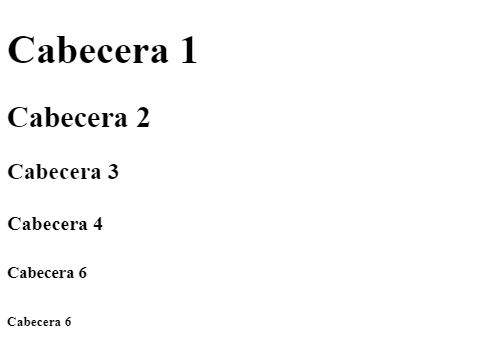
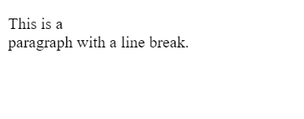
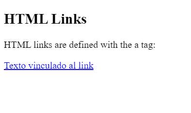
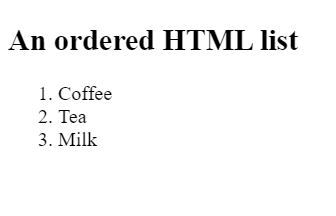
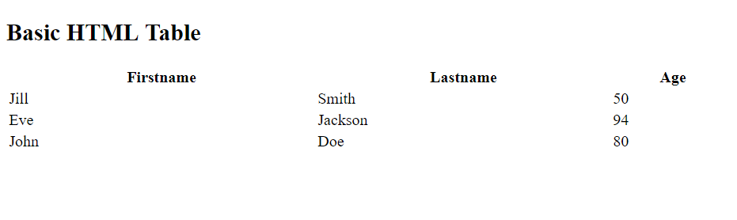

Web4U
Etiquetas HTML
1º Cabecera
En HTML las cabeceras se utilizan para indicar títulos o subtítulos. Puedes utilizar hasta 6 variedades, desde la más "importante" con <h1>, a la menos importante <h6>, en función del texto que quieras representar.

Para obtener más información Click aquí
2º Salto de Línea
Para representar uno (o varios) saltos de línea se utiliza el elemento <br>. A diferencia de otras etiquetas, no necesitas acabar con un </br>.

Para obtener más información Click aquí
3º Links
Para incluir un link en HTML usa la etiqueta <a href="Url_del_link">Texto vinculado al link </a>

Para obtener más información Click aquí
4º Listas ordenadas
Para representar listas ordenadas utilizamos la etiqueta <ol>. Para continuar, cada item que queramos añadir necesita usar el elemento <li>. ¡Recuerda cerrar la lista con </ol>!.

Para obtener más información Click aquí
5º Tablas
Para representar tablas utilizamos la etiqueta <table>. Para continuar, en cada fila de la tabla usamos <tr> (principio y final de la fila), e iremos añadiendo celda a celda con la etiqueta <td>, pudiendo indicar en la primera fila el encabezado con <th>. ¡Recuerda cerrar la lista con </table>!.

Para obtener más información Click aquí